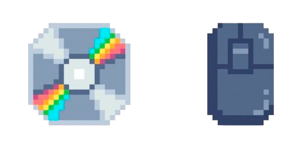
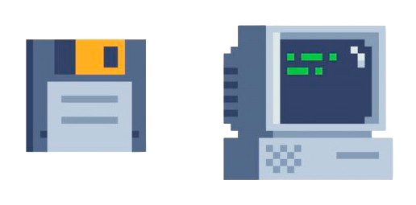
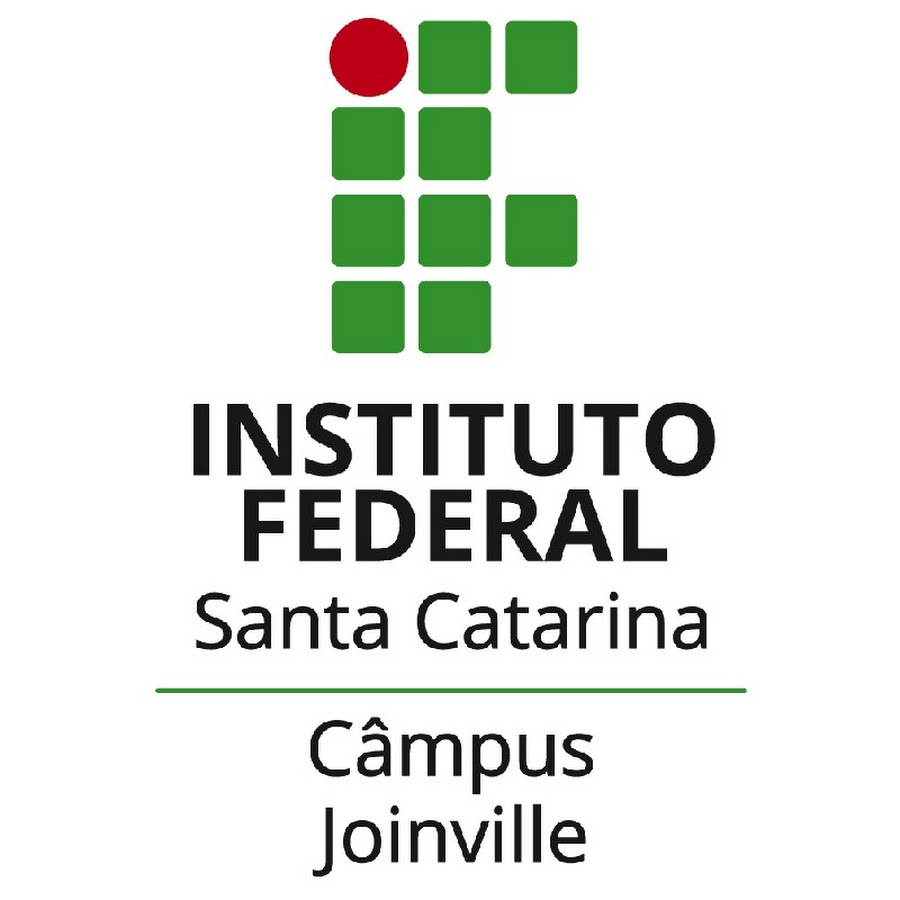
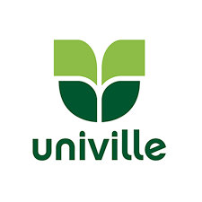
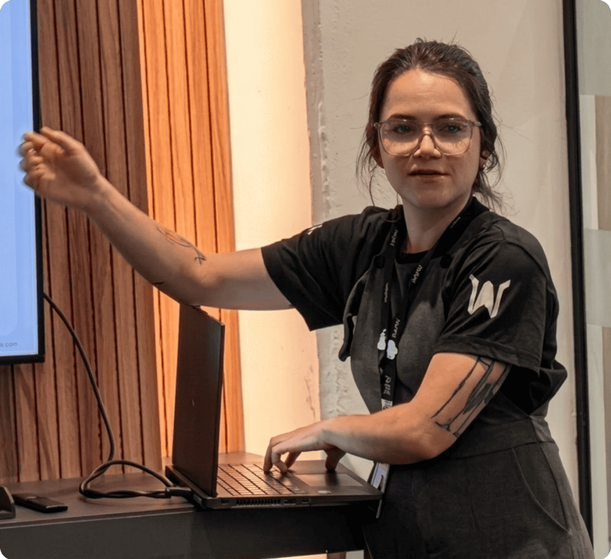

Atualmente, curso Ciência da Computação pela UNINTER (polo Joinville/SC), com previsão de conclusão em 2028. Essa formação marca a união entre minha vivência prática com tecnologia e o estudo estruturado de fundamentos teóricos, como algoritmos, estruturas de dados, arquitetura de computadores e engenharia de software. Ao longo do curso, venho consolidando meus conhecimentos-base nas áreas de lógica de programação e raciocínio computacional, sempre com o olhar voltado para a aplicação prática, seja na análise de problemas, no desenvolvimento de soluções ou na compreensão de como hardware e software se conectam no dia a dia.
Formação técnica concluída em Eletroeletrônica pelo IFSC, com foco em circuitos, componentes, leitura e interpretação de esquemas elétricos/eletrônicos e atividades de bancada. Essa formação, aliada ao estágio que fiz concomitantemente ao meu último ano, me permitiu vivenciar os componentes de hardware, compreender o funcionamento de sistemas físicos e me proporcionou uma experiência prática em montagem, testes e diagnóstico. Considero que todos esses fatores foram relevantes para compreender as relações entre hardware e software, especialmente em contextos de produto e tecnologia aplicada.


Cursei três anos de Psicologia na Univille (2021–2024), formação não concluída, mas que agregou competências importantes para a área de tecnologia. Através de toda a base teórica e prática vivenciada durante esses anos de curso, desenvolvi uma compreensão mais profunda do comportamento humano, da comunicação e dos processos de tomada de decisão, o que contribui diretamente para temas como a experiência do usuário (UX), usabilidade e trabalho em equipe. Assim, considero que a combinação entre visão humana e formação técnica orienta minha forma de pensar produtos e soluções tecnológicas voltadas para pessoas reais.
Tenho inglês em nível avançado, com conversação intermediária e leitura técnica avançada. Além disso, tenho facilidade no processo de aprendizado técnico, com uma abordagem didática, lógica e empática na hora de compartilhar conhecimento com outras pessoas, bem como um bom raciocínio estruturado para análise e resolução de problemas. No ambiente corporativo, tenho vivência com ferramentas de gestão e suporte como SAP e sistemas de CRM. Com relação à Microsoft, tenho domínio do pacote Office e das ferramentas do Microsoft 365, utilizando planilhas, apresentações, documentos colaborativos e integrações entre aplicativos para o bom acompanhamento de projetos.
